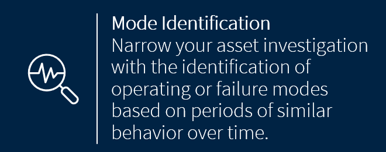

Automatic Mode Identification (ModeID)
What does ModeId do?
ModeId preforms Automatic Mode Identification on a time series of vibration measurements: the algorithm will automatically detect a number of operational modes in the time series data.
An operational mode is a time period where the data exhibits a similar structure. For a pump, different operational modes could either reflect different usages in a production process like different fluids to be pumped, on-off state, or a developing failure.
How does ModeId work?
The mode identification algorithm is an unsupervised algorithm. It works by first converting all vibration measurements from the time domain into the frequency domain and then selecting the most relevant frequency bands. After that it performs a clustering of the frequency domain data. A number of runs are conducted to find the optimal number of clusters ensuring to neither over- or under fit the model. The resulting clusters represent the operational modes.
Each data point is assigned a probability of it belonging to the assigned cluster, if the probability is very low the point is labeled as “uncertain”.
Use cases for the algorithm
Find operational modes (“normal”, “failure”, …).
Overview representations of vibration data time series.
Quickly investigate and classify/label large amounts of vibration data.
Anomaly detection by means of using the points labeled “uncertain”.
Example
The example shows the application of Automatic Mode Identification to one year of data from a heatpump (no frequency domain data in this example). The algorithm correctly detects 4 modes:
Never heating: occurs during summer, when no heating is required.
Always heating: occurs during winter, when the heatpump works constantly
Intermittent heating: Two modes for autumn/spring when the heatpump is heating, but not constantly.
Using the algorithm via mvg
For code example see the Visual Analysis Example.
Upload vibration time series data to a source, a minimum of 20 data points is required.
Request an analysis for the source.
Read the results(see below).
Analysis Parameters
The ModeId feature requires no parameters except the source Id (sid) feature (“ModeId”).
By default, ModeId will not require any additional, algorithmic input parameters, as it has a built in optimization function to determine the optimal parameters, most notably the number of modes.
If, however, a certain number of modes is desired in the analysis result, the optimizer can be disabled and a specific number of modes (e.g 3) can be set by sending the following parameters.
{
'optimized': False,
'number_of_clusters': 3
}
Structure of the Results
The result returned by the analysis call will be a dictionary
containing four lists: the timestamps, the label (aka operational
modes), the mode_probability and uncertain where a logical value of True indicates an
uncertain assignment to the mode, which could be an indication of an anomaly.
{
'timestamps': [... list of timestamps ...],
'label': [... list labels (=mode numbers)...],
'uncertain': [... list of booleans indicating uncertain modes...]
'mode_probability': [... list mode probabilities for each timestamps...]
}
In addition, the results returned by the analysis include an additional dictionary with the “Emerging Modes”. “Emerging Modes” is an additional result output that describes the first appearance of each mode. The dictionary contains four lists: the modes, the emerging_time corresponding to the epoch of first appearance of each mode , the max_prob_time corresponding to the epoch with the largest mode probability and max_probability for each mode.
{
'modes': [... list of modes ...],
'emerging_time': [... list timestamps for first appearance of each mode...],
'max_prob_time': [... list timestamps with the maximum mode probability...]
'max_probability': [... list with the maximum mode probabilities...]
}
Notes
The algorithm is agnostic to the scale of the measurements, but the scale for all measurements needs to be consistent.